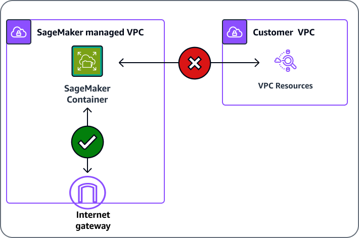
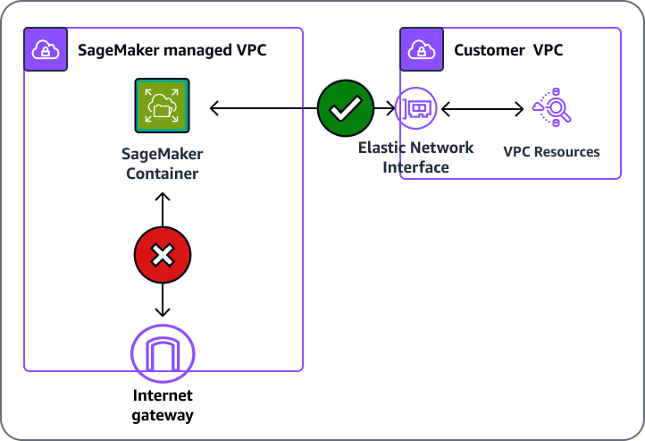

Connect to SageMaker Within your VPC
You can connect directly to the SageMaker API or to Amazon SageMaker Runtime through an interface endpoint in your virtual private cloud (VPC) instead of connecting over the internet. When you use a VPC interface endpoint, communication between your VPC and the SageMaker API or Runtime is conducted entirely and securely within an AWS network.
Connect to SageMaker through a VPC interface endpoint
The SageMaker API and SageMaker Runtime support Amazon Virtual Private Cloud (Amazon VPC)
interface endpoints that are powered by AWS PrivateLink
The VPC interface endpoint connects your VPC directly to the SageMaker API or SageMaker Runtime using AWS PrivateLink without using an internet gateway, NAT device, VPN connection, or AWS Direct Connect connection. The instances in your VPC do not need to connect to the public internet in order to communicate with the SageMaker API or SageMaker Runtime.
You can create an AWS PrivateLink interface endpoint to connect to SageMaker or to SageMaker Runtime using either the AWS Management Console or AWS Command Line Interface (AWS CLI). For instructions, see Creating an Interface Endpoint.
If you haven't enabled a private Domain Name System (DNS) hostname for your VPC
endpoint, after you have created a VPC endpoint, specify the
internet endpoint URL to the SageMaker API or SageMaker Runtime. Example code using AWS CLI commands
to specify the endpoint-url parameter follows.
aws sagemaker list-notebook-instances --endpoint-urlVPC_Endpoint_ID.api.sagemaker.Region.vpce.amazonaws.com aws sagemaker list-training-jobs --endpoint-urlVPC_Endpoint_ID.api.sagemaker.Region.vpce.amazonaws.com aws sagemaker-runtime invoke-endpoint --endpoint-urlVPC_Endpoint_ID.runtime.sagemaker.Region.vpce.amazonaws.com \ --endpoint-nameEndpoint_Name\ --body "Endpoint_Body" \ --content-type "Content_Type" \Output_File
If you enable private DNS hostnames for your VPC endpoint, you don't need to specify
the endpoint URL because the default hostname
(https://api.sagemaker.Region.amazon.com) resolves to
your VPC endpoint. Similarly, the default SageMaker Runtime DNS hostname
(https://runtime.sagemaker.Region.amazonaws.com) also
resolves to your VPC endpoint.
The SageMaker API and SageMaker Runtime support VPC endpoints in all AWS Regions where both
Amazon
VPC and SageMaker are
available. SageMaker supports making calls to all of its Operations inside your VPC. The result
AuthorizedUrl from the
CreatePresignedNotebookInstanceUrl
command is not supported by AWS PrivateLink. For information about how to enable
AWS PrivateLink for the authorized URL that users use to connect to a notebook instance,
see Connect to a Notebook Instance Through a
VPC Interface Endpoint.
Note
When setting up a
VPC
interface endpoint for the SageMaker Runtime service
(https://runtime.sagemaker.Region
To learn more about AWS PrivateLink, see the AWS PrivateLink documentation. Refer to AWS PrivateLink Pricing
Using SageMaker training and hosting with resources inside your VPC
SageMaker uses your execution role to download and upload information from an Amazon S3 bucket and Amazon Elastic Container Registry (Amazon ECR), in isolation from your training or inference container. If you have resources that are located inside your VPC, you can still grant SageMaker access to those resources. The following sections explain how to make your resources available to SageMaker with or without network isolation.
Without network isolation enabled
If you haven't set network isolation on your training job or model, SageMaker can access resources using either of the following methods.
-
SageMaker training and deployed inference containers can access the internet by default. SageMaker containers are able to access external services and resources on the public internet as part of your training and inference workloads. SageMaker containers are not able to access resources inside your VPC without a VPC configuration, as shown in the following illustration.
 -
Use a VPC configuration to communicate with resources inside your VPC through an elastic network interface (ENI). The communication between the container and the resources in your VPC takes place securely within your VPC network, as shown in the following illustration. In this case, you manage networking access to your VPC resources and internet.

With network isolation
If you employ network isolation, the SageMaker container can't communicate with resources inside your VPC or make any network calls, as shown in the following illustration. If you provide a VPC configuration, the download and upload operations will be run through your VPC. For more information about hosting and training with network isolation while using a VPC, see Network Isolation.
Create a VPC Endpoint Policy for SageMaker
You can create a policy for Amazon VPC endpoints for SageMaker to specify the following:
-
The principal that can perform actions.
-
The actions that can be performed.
-
The resources on which actions can be performed.
For more information, see Controlling Access to Services with VPC Endpoints in the Amazon VPC User Guide.
Note
VPC endpoint policies aren't supported for Federal Information Processing Standard (FIPS) SageMaker runtime endpoints for runtime_InvokeEndpoint.
The following example VPC endpoint policy specifies that all users who have access to
the VPC interface endpoint are allowed to invoke the SageMaker hosted endpoint named
myEndpoint.
{ "Statement": [ { "Action": "sagemaker:InvokeEndpoint", "Effect": "Allow", "Resource": "arn:aws:sagemaker:us-west-2:123456789012:endpoint/myEndpoint", "Principal": "*" } ] }
In this example, the following are denied:
-
Other SageMaker API actions, such as
sagemaker:CreateEndpointandsagemaker:CreateTrainingJob. -
Invoking SageMaker hosted endpoints other than
myEndpoint.
Note
In this example, users can still take other SageMaker API actions from outside the VPC. For information about how to restrict API calls to those from within the VPC, see Control Access to the SageMaker API by Using Identity-based Policies.
Create a VPC Endpoint Policy for Amazon SageMaker Feature Store
To create a VPC Endpoint for Amazon SageMaker Feature Store, use the following endpoint template,
substituting your VPC_Endpoint_ID.api and
Region:
VPC_Endpoint_ID.api.featurestore-runtime.sagemaker.Region.vpce.amazonaws.com
Connect Your Private Network to Your VPC
To call the SageMaker API and SageMaker Runtime through your VPC, you have to connect from an instance that is inside the VPC or connect your private network to your VPC by using an AWS Virtual Private Network (AWS VPN) or AWS Direct Connect. For information about AWS VPN, see VPN Connections in the Amazon Virtual Private Cloud User Guide. For information about AWS Direct Connect, see Creating a Connection in the AWS Direct Connect User Guide.